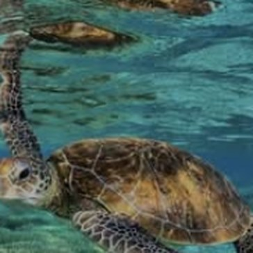
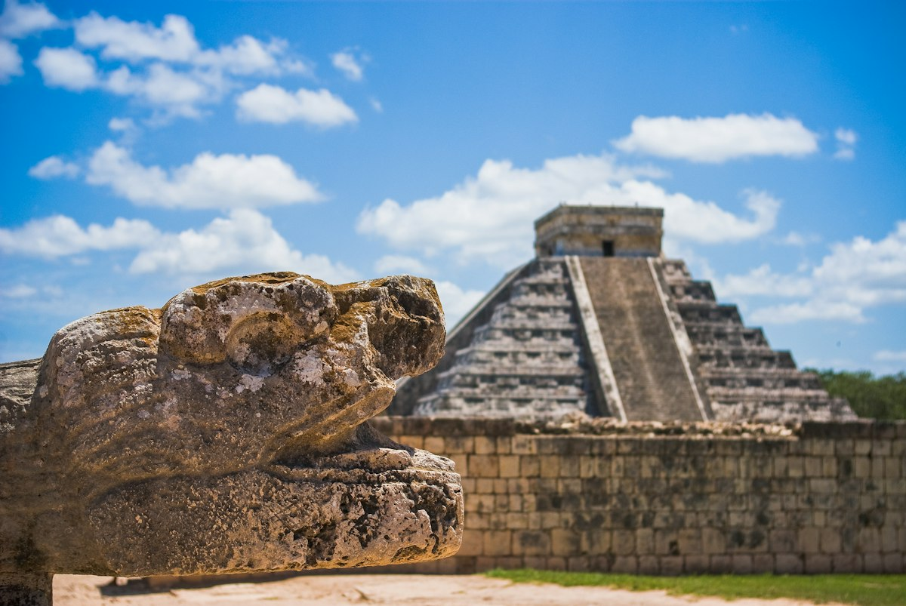
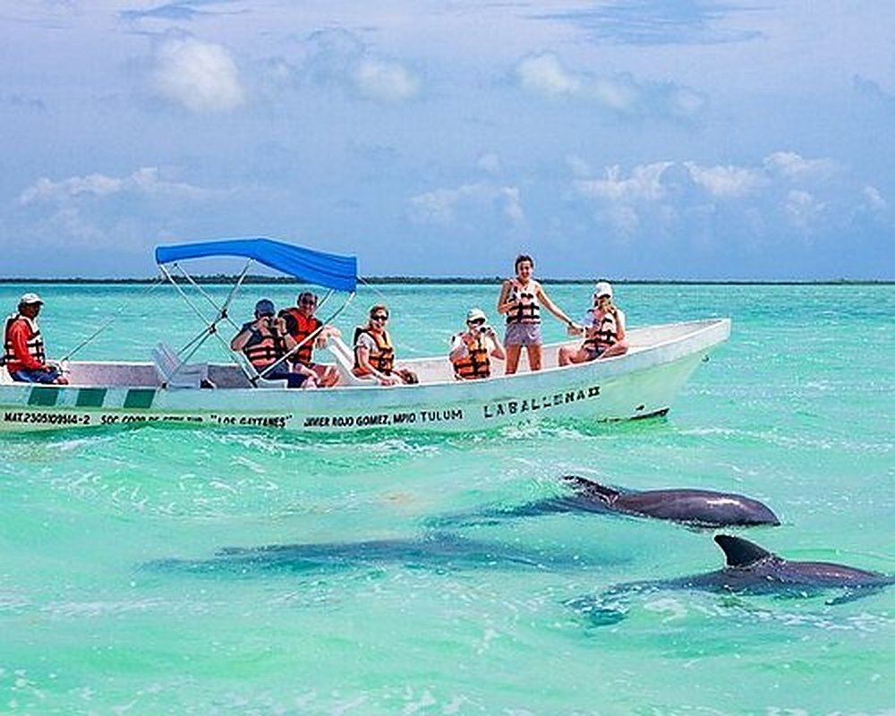

El Cielo, Cozumel
Un coin de paradis aux eaux cristallines : snorkeling parmi les étoiles de mer, les coraux et les tortues.
Réserver →Des excursions soigneusement sélectionnées pour découvrir le Yucatán en toute sérénité.
Chaque excursion s'adapte à votre rythme et à vos envies.
Un message WhatsApp suffit, nous vous répondons rapidement.
Des recommandations sincères de quelqu'un qui vit ici.
Collection
Toutes nos excursions partent de Playa del Carmen. Tarifs et disponibilités sur demande, réponse rapide sur WhatsApp.

Un coin de paradis aux eaux cristallines : snorkeling parmi les étoiles de mer, les coraux et les tortues.
Réserver →
Découvrez la cité maya inscrite parmi les sept nouvelles merveilles du monde et sa célèbre pyramide de Kukulcán.
Réserver →
Deux sites mayas incontournables : Tulum face à la mer des Caraïbes et Cobá au cœur de la jungle.
Réserver →
La lagune aux sept couleurs, des eaux turquoise à perte de vue pour une journée inoubliable.
Réserver →
Une réserve naturelle préservée, classée au patrimoine mondial de l'UNESCO, entre lagunes, mangroves et plages sauvages.
Réserver →
Navigation en catamaran, baignade et snorkeling dans les eaux turquoise d'Isla Mujeres.
Réserver →Le célèbre parc éco-archéologique à quelques minutes de Playa del Carmen : rivières souterraines, plages, faune locale et grand spectacle du soir.
Réserver →Une aventure en quad à travers la jungle de la Riviera Maya : pistes de terre, sensations fortes et nature sauvage.
Réserver →Tarifs 2026
Prix en pesos mexicains, avec l'équivalent en dollars américains et canadiens au taux du jour. Transport depuis votre hôtel ou un point de rencontre selon l'excursion.
Taux indicatif : 1 USD ≈ 18 MXN
Journée complète
La lagune aux sept couleurs
Du jeudi au mardi (pas d'excursion le mercredi)
Journée complète
L'île aux eaux turquoise
Tous les jours (départ de Tulum : lundi, mercredi, vendredi)
Absence le jour du tour : 20 USD par personne. Départ de Tulum : acompte de 50 % non remboursable.
Journée complète
Réserve naturelle et île des Femmes
Lundi, mercredi et vendredi · environ 7 h
Absence le jour du tour : le prix total est facturé.
Voir la fiche détaillée de chaque excursion →
Prix par personne sauf mention contraire. « En duo » : deux personnes partagent un véhicule ; « seul » : un véhicule pour une personne. Les taxes indiquées se paient en plus. Tarifs susceptibles de changer : la disponibilité et le prix final sont confirmés sur WhatsApp au moment de la réservation.
À propos
Vibe Riviera Maya est née d'un amour profond pour cette région. Notre mission : vous faire vivre les plus beaux endroits du Yucatán, avec le confort et l'attention que vous méritez.
Avis
Les avis publiés ici sont ceux de vrais voyageurs, vérifiés avant publication.
Les premiers avis de nos voyageurs arrivent bientôt. Vous êtes parti avec nous ? Partagez votre expérience ci-dessous.
Réservation
Remplissez le formulaire : votre demande de réservation nous est envoyée directement. Nous vous confirmons la disponibilité, l'horaire et le prix final par e-mail ou WhatsApp.
Aucun paiement en ligne : votre place est confirmée après vérification de la disponibilité.